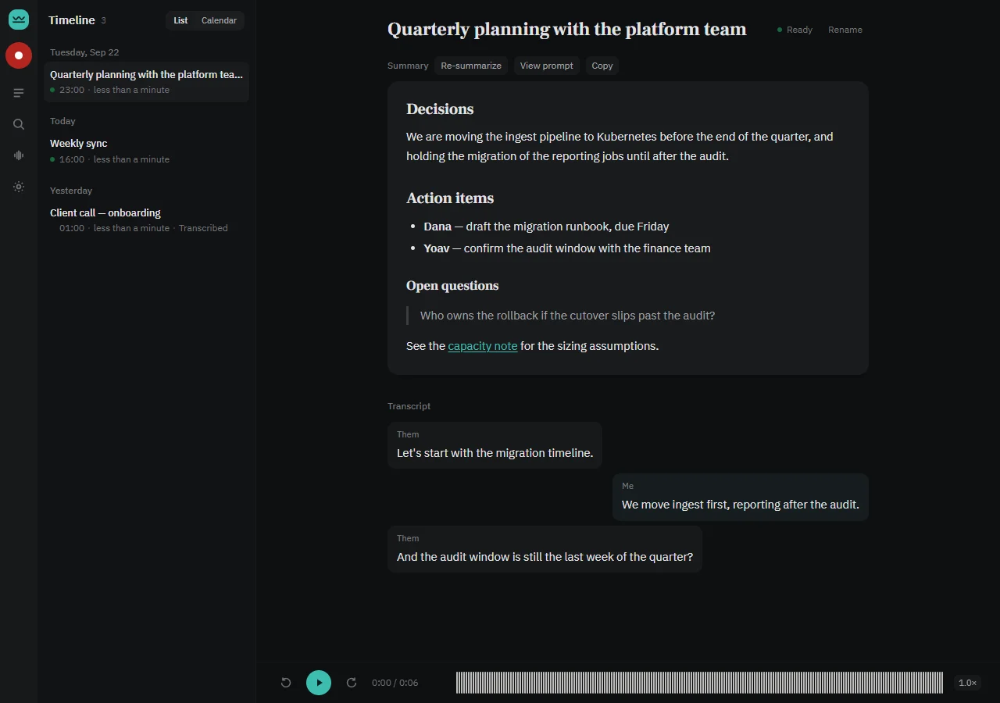

Your meetings stay private
Recorded and kept on your own computer. Nothing is uploaded to be transcribed, and with a local AI model nothing leaves at all.
Every meeting, written up. Nobody else in the room.
Private meeting notes for Windows
Upshot notices when your meeting starts, records it on your own computer and gives you a summary written the way you like it. Nobody joins your call, and the recording never leaves your PC.
Upshot is recording on this PC, not in the call
Recorded and kept on your own computer. Nothing is uploaded to be transcribed, and with a local AI model nothing leaves at all.
Upshot notices when a meeting starts. Let it record on its own, and every call ends with notes, whether you remembered or not.
Tell it once how you like your notes: sections, tone, even colours. Every summary is ready to paste into an email.
The problem with notetaker bots
Client: Sorry, who’s the notetaker?
Upshot never joins the call. It listens from your own PC, and keeps what it hears there.
How it works
Join as usual, in any app. Upshot spots that a meeting has started, on its own
Quietly, on your computer. Nobody in the call sees a thing
After the call, a summary in your format is in your timeline
Let it record every meeting it notices, or just have it show you the meetings it spotted. You can always press Record yourself.
Your words are kept apart from everyone else’s, so it’s always clear what you said you’d do.
No special hardware. A graphics card makes it faster; without one, your notes just take longer to arrive.
Your format
What you tell it, once
Write the summary as an email to the client. Open with a two-line recap, then Decisions, Action items with owner and date, and Next meeting. Headings in #0f766e. Under 200 words.
Thanks for the time today. We agreed the pilot starts on the 1st, with the reporting module in phase two.
Tuesday 10:00, pilot kickoff
Change your instructions any time, and any meeting can be written up again in the new format.
Works with your call app
Run on real meetings
Upshot works with any call app on your computer, without joining the call or adding anything to it. Summaries are written by the AI model you choose: Claude has written them for real meetings, and the others are ready but not yet used on a live one.
The app

Compared
| Question | Notetaker bots | Upshot |
|---|---|---|
| Shows up in the participant list | yes | never |
| Recording stored on a vendor’s servers | usually | never |
| Starts without you pressing Record | from your calendar | when the call starts, if you turn it on |
| Summary in a format you write yourself | templates | any format |
| An account to sign up for | yes | no |
| Built to understand Hebrew | rarely | yes |
| Runs on macOS | usually | no, Windows only |
Trust
Questions

One file to run. It works out what to download and asks once.
git clone https://github.com/am-consultingai/upshot.git
cd upshot
scripts\windows\run-app.cmdWindows · graphics card optional · installer Soon
It can’t yet tell the other people in the call apart: their words are labelled together.